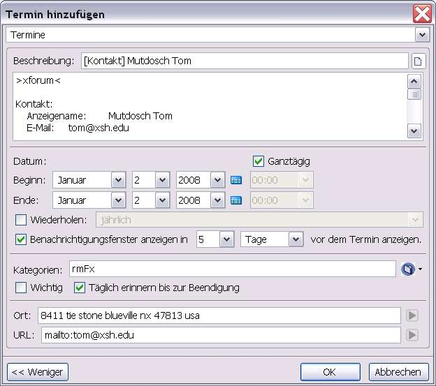

Erinnerungen/Termine können auch mit bestimmten Anwendnungsinformationen direkt angelegt werden:
Internet-Seiten, E-Mail (siehe Abschnitt 'Erinnerungen für Nachrichten'), Adressbuch
Erinnerung für eine Internet-Seite
Im Browser (Firefox) kann mit dem Kontextmenü für eine Internet-Seite eine Erinnerung angelegt werden.
- Ist auf der Seite nichts markiert, wird die Adresse der Internet-Seite in das Feld [URL] eingetragen.
- Ist ein Text in der Internet-Seite markiert, wird dieser Text in das Reminderfox Notizfeld übernommen. Dies ist hilfreich, um später an eine Internet-Seite mit einer bestimmten Textstelle als Termin oder Aufgabe erinnert zu werden.
- Mit 'Drag and Drop' kann eine Internet-Adresse auf einer angezeigten Seite auf das Schleifensymbol auf der Statusleiste gezogen werden. Damit wird ein neuer Termin angelegt, wobei die URL in das Feld [URL] übernommen wird.
Erinnerung für einen Adressbucheintrag
Für Kontakte im Adressbuch (TB/SM) können ebenfalls Erinnerungen angelegt werden. Mit der Anzeige der Namensliste des Adressbuches wird das Kontextmenü mit dem Punkt [Termin hinzufügen ...] verwendet. Der vorher markierte Kontakt ist nun Basis des neu eröffneten Dialogs.

Im Notizbereich sind eine Reihe von Informationen zu dem gewählten Kontakt eingetragen:
der Name des Adressbuches (hier >xforum<), der Kontakt, Telefon, Anschriften sowie die 'Sonstigen' Parameter. Alle voreintragenen Informationen lassen sich nach Belieben ändern, löschen oder ergänzen, die Einträge im Adressbuch werden nicht verändert.
Der Eintrag 'Ort' wird gebildet aus dem Adressfeld 'Privat', das Icon  kann direkt für Google Maps benutzt werden.
Der Eintrag 'URL' hat die primäre E-Mail Adresse des Kontaktes und das Icon ruft direkt ein Erstellen einer Nachricht mit der Mailadresse auf).
kann direkt für Google Maps benutzt werden.
Der Eintrag 'URL' hat die primäre E-Mail Adresse des Kontaktes und das Icon ruft direkt ein Erstellen einer Nachricht mit der Mailadresse auf).
Öffnen eines Kontaktes aus der ReminderFox Liste
Erinnerungen, die mit der vorher beschriebenen Methode für Kontakte angelegt wurden, können über die ReminderFox Liste geöffnet werden. Auf der entsprechenden Zeile in der Liste bietet das Kontextmenü einen Punkt: [Öffnen des Kontaktes]. So kann die Kontaktkarte im Thunderbird Adressbuch direkt aufgerufen und bearbeitet werden. Hinweis: Erfordert mindestens Thunderbird 3.0